There are a total of 114 Attire items that you can outfit your hunter with in Bloodborne.


| Item Name | Description | |
|---|---|---|
|
Arianna's Shoes | Shoes worn by Arianna. woman of the night in the Cathedral Ward. Innocent and cute. in contrast with its owner." |
| 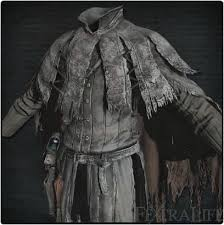 | Ashen Hunter Garb | Attire of the retired hunter Djura. Painted with ash in a ceremony to ward off blood. Djura is known through his contact with the Powder Kegs, the heretics of the workshop. He is said to have been both uncommonly kind and dreadfully foolish. Djura felt defeated by the state of Old Yharnam, and renounced his hunter's vows." |
|
Ashen Hunter Gloves | Attire of the retired hunter Djura. Painted with ash in a ceremony to ward off blood. Djura is known through his contact with the Powder Kegs, the heretics of the workshop. He is said to have been both uncommonly kind and dreadfully foolish. Djura felt defeated by the state of Old Yharnam, and renounced his hunter's vows." |
|
Ashen Hunter Trousers | Attire of the retired hunter Djura. Painted with ash in a ceremony to ward off blood Djura is know through his contact with the Powder Kegs, the heretics of the workshop. He is said to have been both uncommonly kind and dreadfully foolish. Djura felt defeated by the state of Old Yharnam, and renounced his hunter's vows." |
| Beak Mask | Wood-carved mask of Eileen the Crow, Hunter of Hunters. The beak contains incense to mask scents of blood and beast." Hunters of Hunters dress as crows to suggest sky burial. The first Hunter of Hunters came from a foreign land, and gave the dead a virtuous native funeral ritual, rather than impose a blasphemous Yharnam burial service upon them, with the hope that former compatriots might be returned to the skies, and find rest in a hunter's dream. | |
| Beast Hide Garb | The bloodied hide of a horrible Cleric Beast, pulled over the back. Without the attacked beast hide this foreigner garb wouldn't raise anyone's eyebrows. Brador donned a compatriot's beastly scalp and hide while still moist with blood. Most of the blood stains on this hide were from that day" | |
|
Black Church Garb | Attire of Healing Church hunters. The Holy Shawl, symbol of the Healing Church, flutters proudly on their backs. Most Healing Church hunters are elementary doctors who understand the importance of early prevention of the scourge, achieved by disposing of victims, and even potential victims, before signs of sickness manifest themselves. Their black attire is synonymous with fear, and that peculiar Yharnam madness" |
| Black Church Hat | Attire of Healing Church hunters. Most Healing Church hunters are elementary doctors who understand the importance of early prevention of the scourge, achieved by disposing of victims, and even potential victims, before signs of sickness manifest themselves. Their black attire is synonymous with fear, and that peculiar Yharnam madness." | |
|
Black Church Trousers | Attire of Healing Church hunters. Most Healing Church hunters are elementary doctors who understand the importance of early prevention of the scourge, achieved by disposing of victims, and even potential victims, before signs of sickness manifest themselves. Their black attire is synonymous with fear, and that peculiar Yharnam madness." |
|
Black Hood | Hood worn upon awakening to the nightmare of blood and beasts. Perhaps its wearer had to stay out of sight, and travel by cover of darkness. Without memory. who will ever know?" |
|
Black Hooded Iron Helm | Iron helmet worn by hunters of the Unseen Village. The hunters of Yahar’gul answer to the village's founders, the School of Mensis. Hunters in name only, these kidnappers wear their black hoods low to shadow their eyes. This helm is made of metal. a rarity for hunter garb and has high defence, but only against physical attacks." |
|
Blindfold Cap | Attire of the Choir, high-ranking members of the Healing Church. Members of the Choir are both the highest-ranking clerics of the Healing Church, and scholars who continue the work that began at Byrgenwerth. The eye covering indicates their debt to the teachings of Master Willem, even though their paths diverged." |
|
Bloodied Arm Bands | Bloodied Arm Bands. Brador donned a compatriot's beastly scalp and hide while still moist with blood. Most of the blood stains on this hide were from that day" |
|
Bloodied Trousers | Brador donned a compatriot's beastly scalp and hide while still moist with blood. Most of the blood stains on this hide were from that day" |
|
Bone Ash Armor | Armor made of bone ash,worn by the oldest keepers. The keepers, who mind the slumbering Great Ones, gained eternal life, preserved in ashen form in a ceremony of flame that cremated body and soul Now, their frail armor is white and sinewy, a window into an arcane lost art." |
| 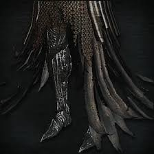 | Bone Ash Leggings | Armor made of bone ash,worn by the oldest keepers. The keepers, who mind the slumbering Great Ones, gained eternal life, preserved in ashen form in a ceremony of flame that cremated body and soul. Now, their frail armor is white and sinewy, a window into an arcane lost art" |
|
Bone Ash Mask | A mask made of bone ash, worn by the oldest keepers. The keepers, who mind the slumbering Great Ones, gained eternal life, preserved in ashen form in a ceremony of flame that cremated body and soul. The long, pointed hat is a symbol of the old keepers and is considered evidence of their companionship, forged in a certain sin." |
|
Brador's Testimony | The scalp of a horrid Cleric Beast, indicating that hunter Brador, a Healing Church assassin, had killed a compatriot. Afterward, he wore his ally's own scalp, and hid himself away, deep below in a cell. The Church provided him with a single, soundless bell of death to ensure their secrets would be kept." |
|
Butcher Garb | Garb of the Madaras twins, denizens of the Forbidden Woods, likely belonging to the older of the two. Both the twins became hunters, and brought back and dissected their beast prey, in order to support the villagers in their forbidden research." |
|
Butcher Gloves | Gloves of the Madaras twins, denizens of the Forbidden Woods, likely belonging to the older of the two. Both the twins became hunters, and brought back and dissected their beast prey, in order to support the villagers in their forbidden research." |
| Butcher Mask | Mask of the Madaras twins, denizens of the Forbidden Woods, likely belonging to the older of the two. The twins grew up in silent kinship with a poisonous snake. Eventually they learned human ways, and became hunters. When they discovered vermin even in their beloved snake, the younger brother is said to have murdered the older." | |
|
Butcher Trousers | Trousers of the Madaras twins, denizens of the Forbidden Woods, likely belonging to the older of the two. Both the twins became hunters, and brought back and dissected their beast prey, in order to support the villagers in their forbidden research." |
|
Cainhurst Armor | Silver armor worn by the royal guards who protect Annalise, Queen of the Vilebloods at Cainhurst Castle. This paper-thin silver armor is said to deflect blood of ill-intent, and is what allows the royal guards to capture prey for their beloved Queen, so that one day, she may bear a Child of Blood." |
|
Cainhurst Gauntlets | Silver gauntlets worn by the royal guards who protect Annalise, Queen of the Vilebloods at Cainhurst Castle. This paper-thin silver armor is said to deflect blood of ill-intent, and is what allows the royal guards to capture prey for their beloved Queen, so that one day, she may bear a Child of Blood." |
|
Cainhurst Leggings | Silver leggings worn by the royal guards who protect Annalise, Queen of the Vilebloods at Cainhurst Castle. This paper-thin silver armor is said to deflect blood of ill-intent, and is what allows the royal guards to capture prey for their beloved Queen, so that one day, she may bear a Child of Blood." |
|
Charred Hunter Garb | One of the staple articles of hunter attire, fashioned at the workshop. A product of the scourge of the beast that once plagued Old Yharnam and culminated in the town's fiery cleansing. The cape's dampness makes it highly resistant to fire. Wearers of this attire hunted down Victims of the scourge who survived the raging flames and stench of singed blood." |
|
Charred Hunter Gloves | "One of the staple articles of hunter attire, fashioned at the workshop. A product of the scourge of the beast that once plagued Old Yharnam and culminated in the town's fiery cleansing. Designed to be highly resistant to fire. Wearers of this attire hunted down victims of the scourge who survived the raging flames and stench of singed blood" |
|
Charred Hunter Trousers | One of the staple articles of hunter attire, fashioned at the workshop. A product of the scourge of the beast that once plagued Old Yharnam and culminated in the town's fiery cleansing. Designed to be highly resistant to fire. Wearers of this attire hunted down victims of the scourge who survived the raging flames and stench of singed blood." |
|
Choir Garb | Attire of the Choir, high-ranking members of the Healing Church. Members of the Choir are both the highest-ranking clerics of the Healing Church, and scholars who continue the work that began at Byrgenwerth. Together with the left behind Great One, they look to the skies, in search of astral signs, that may lead them to the rediscovery of true greatness." |
| 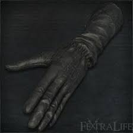 | Choir Gloves | Attire of the Choir, high-ranking members of the Healing Church. Members of the Choir are both the highest-ranking clerics of the Healing Church, and scholars who continue the work that began at Byrgenwerth. The eye covering indicates their debt to the teachings of Master Willem, even though their paths diverged." |
|
Choir Trousers | Attire of the Choir, high-ranking members of the Healing Church. Members of the Choir are both the highest-ranking clerics of the Healing Church, and scholars who continue the work that began at Byrgenwerth. The eye covering indicates their debt to the teachings of Master Willem, even though their paths diverged." |
|
Constable Gloves | From where you first meet Simon- Head straight towards the bridge and once you have gotten out of the tunnel make a right towards the hill. The gloves is located at the end of the path on a corpse. |
|
Constable Trousers | Once upon a time a troupe of foreign constables chased a beast all the way to Yahrnam, and this is what they wore. The constables became victims of the beast, except for one survivor, who in turn devoured the creature whole, all by himself. The fable is a favorite among Yahrnamites, who are partial to any stories of pompous, intolerant foreigners, who suffer for their ignorance. It makes the blood taste that much sweeter." |
|
Constable's Garb | Once upon a time a troupe of foreign constables chased a beast all the way to Yahrnam, and this is what they wore. The constables became victims of the beast, except for one survivor, who in turn devoured the creature whole, all by himself. The fable is a favorite among Yahrnamites, who are partial to any stories of pompous, intolerant foreigners, who suffer for their ignorance. It makes the blood taste that much sweeter." |
| Crowfeather Garb | Wood-carved mask/Attire of Eileen the Crow, Hunter of Hunters. The beak contains incense to mask scents of blood and beast. Hunters of Hunters dress as crows to suggest sky burial. The first Hunter of Hunters came from a foreign land, and gave the dead a virtuous native funeral ritual, rather than impose a blasphemous Yharnam burial service upon them. with the hope that former compatriots might be returned to the skies, and find rest in the Hunter's Dream" | |
|
Crowfeather Manchettes | Wood-carved attire of Eileen the Crow, Hunter of Hunters. The beak contains incense to mask scents of blood and beast. Hunters of Hunters dress as crows to suggest sky burial. The first Hunter of Hunters came from a foreign land, and gave the dead a virtuous native funeral ritual, rather than impose a blasphemous Yharnam burial service upon them. with the hope that former compatriots might be returned to the skies, and find rest in the Hunter's Dream" |
|
Crowfeather Trousers | Attire of Eileen the Crow, Hunter of Hunters. The beak contains incense to mask scents of blood and beast. Hunters of Hunters dress as crows to suggest sky burial. The first Hunter of Hunters came from a foreign land, and gave the dead a virtuous native funeral ritual, rather than impose a blasphemous Yharnam burial service upon them, with the hope that former compatriots might be returned to the skies, and find rest in the Hunter's Dream" |
|
Crown of Illusions | One of the precious secrets of Cainhurst. The old king's crown is said to reveal illusions, and expose a mirage that hides a secret. And so Logarius donned the crown of his own volition, determined to prevent a single soul from stumbling upon the vile secret. What visions did he see, sitting serenely upon his new throne?" |
| Decorative Old Hunter Garb | Old Hunter Garb decorated with brass trinkets At the time, some hunters believed that certain metals would ward off beast blood. On a night of the hunt, it is no wonder that people would resort to superstition." | |
|
Decorative Old Hunter Trousers | Old Hunter Garb decorated with brass trinkets At the time, some hunters believed that certain metals would ward off beast blood. On a night of the hunt, it is no wonder that people would resort to superstition." |
| Doll Clothes | "Discarded doll clothing, likely a spare for dress-up." " A deep love for the doll can be surmised by the fine craftsmanship of this article, and the care with which it was kept." " It borderlines on mania, and exudes a slight warmth." | |
| Doll Hat | A discarded doll hat, likely a spare for dress-up. A deep love for the doll can be sumised by the fine craftsmanship of this article, and the care with which it was kept. It borderlines on mania, and exudes a slight warmth." | |
| 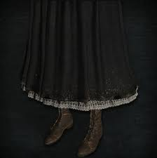 | Doll Skirt | Discarded doll skirt, likely a spare for dress-up." "A deep love for the doll can be sumised by the fine craftsmanship of this article, and the care with which it was kept." "It borderlines on mania, and exudes a slight warmth." |
| Enlarged Head | An enlarged head of a patient of the Cathedral, with a cavity that just happens to fit a human head, although one would be mad to try it on. But if you do, listen carefully, for the sticky sound. Drip, drop. As water, seeping up from the depths, slowly, steadily." | |
|
Executioner Garb | Attire worn by the band of executioners commanded by the martyr Logarius. Later became the basis for all Church attire, with its heavy draping of Holy Shawl. As the great Logarius once said, "Acts of goodness are not always wise, and acts of evil are not always foolish, but regardless, we shall always strive to be good." |
|
Executioner Gauntlets | Gauntlets worn by the band of executioners commanded by the martyr Logarius. Later became the basis for all Church attire, with its heavy draping of Holy Shawl. As the great Logarius once said, "Acts of goodness are not always wise, and acts of evil are not always foolish. but regardless. we shall always strive to be good." |
| 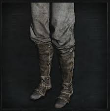 | Executioner Trousers | Trousers worn by the band of executioners commanded by the martyr Logarius. Later became the basis for all Church attire, with its heavy draping of Holy Shawl. As the great Logarius once said, "Acts of goodness are not always wise, and acts of evil are not always foolish. but regardless. we shall always strive to be good." |
|
Foreign Garb | Clothing worn upon awakening to the nightmare of blood and beasts. Not typical clothing for Yharnam, perhaps it is of foreign origin. It is said, after all, the traveler came to Yharnam from afar. Without memory, who will ever know? |
|
Foreign Trousers | Trousers worn upon awakening to the nightmare of blood and beasts. Not typical clothing for Yharnam, perhaps it is of foreign origin. It is said, after all, the traveler came to Yharnam from afar. Without memory, who will ever know?" |
|
Gascoigne's Gloves | Hunter attire worn by Father Gascoigne. Similar to the hunter garb created at the workshop, only these are tainted by the pungent beastly stench that eats away at Gascoigne. "Father" is a title used for clerics in a foreign land, and there is no such rank in the Healing Church." |
|
Gascoigne's Trousers | Hunter attire worn by Father Gascoigne. Similar to the hunter garb created at the workshop, only these are tainted by the pungent beastly stench that eats away at Gascoigne. "Father" is a title used for clerics in a foreign land, and there is no such rank in the Healing Church." |
|
Gasgoigne's Garb | Hunter attire worn by Father Gascoigne. The dingy scarf is a Holy Shawl and symbol of the Healing Church, from which Gascoigne would eventually part ways. "Father" is a title used for clerics in a foreign land, and there is no such rank in the Healing Church. |
|
Gehrman's Hunter Cap | Hunter attire of Gehrman, the first hunter. Created before the workshop existed by making adjustments to everyday clothing, and later became the basis for all hunter's garb. The hunter's emphasis on engaging beasts with speed, and therefore of selecting lightweight attire, no doubt traces back to Gehrman's own combat style." |
|
Gehrman's Hunter Trousers | Hunter attire of Gehrman, the first hunter. Created before the workshop existed by making adjustments to everyday clothing, and later became the basis for all hunter's garb. The hunter's emphasis on engaging beasts with speed, and therefore of selecting lightweight attire, no doubt traces back to Gehrman's own combat style." |
| Gold Ardeo | The odd helmet worn by the band of Executioners commanded by the martyr Logarius. The conical gold helmet, symbol of the executioners, represents luminosity, ambition, and an unflagging resolve to face impurity, staring it down with stern golden spirit. As the great Logarius once said, "Acts of goodness are not always wise, and acts of evil are not always foolish, but regardless, we shall always strive to be good." | |
|
Graveguard Kilt | Kilt of Dores, graveguard of the Forbidden Woods. His pale countenance mimics the labyrinth watchers. Willem kept two loyal servants back at Byrgenwerth. When they were sent into the labyrinth, they encountered the eldritch Truth, and went mad. One became the password gatekeeper, while Dores became a graveguard of the forest. Both remained loyal, even in madness." |
| 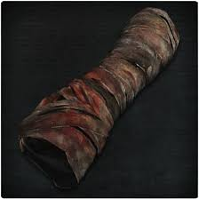 | Graveguard Manchettes | Manchettes of Dores, graveguard of the Forbidden Woods. His pale countenance mimics the labyrinth watchers. Willem kept two loyal servants back at Byrgenwerth. When they were sent into the labyrinth. they encountered the eldritch Truth. and went mad. One became the password gatekeeper, while Dores became a graveguard of the forest. Both remained loyal, even in madness." |
| Graveguard Mask | Mask of Dores, graveguard of the Forbidden Woods. His pale countenance mimics the labyrinth watchers. Willem kept two loyal servants back at Byrgenwerth. When they were sent into the labyrinth. they encountered the eldritch Truth, and went mad. One became the password gatekeeper, while Dores became a graveguard of the forest. Both remained loyal, even in madness." | |
| 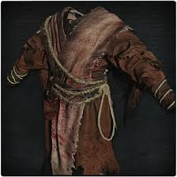 | Graveguard Robe | Robe of Dores, graveguard of the Forbidden Woods. His pale countenance mimics the labyrinth watchers. Willem kept two loyal servants back at Byrgenwerth. When they were sent into the labyrinth. they encountered the eldritch Truth. and went mad. One became the password gatekeeper, while Dores became a graveguard of the forest. Both remained loyal, even in madness." |
| Grey Wolf Cap | Attire of the retired hunter Djura. This worn wolf cap was his trademark. Djura is known through his contact with the Powder Kegs, the heretics of the workshop. He is said to have been both uncommonly kind and dreadfully foolish. Djura felt defeated by the state of Old Yharnam and renounced his hunter's vows." | |
| Harrowed Garb | Certain Church hunters obfuscate their identities and slip into the nooks and crannies of the city. This is the garb that allows these harrowed individuals to go unnoticed. These hunters are keen to early signs of the scourge, serving as a first line of defense against its outbreak. Or perhaps, when the time is ripe, they find signs of the scourge where there are none. It just goes to show, the corner beggar is not always who he seems." | |
|
Harrowed Gloves | Certain Church hunters obfuscate their identities and slip into the nooks and crannies of the city. This is the Gloves that allows these harrowed individuals to go unnoticed. These hunters are keen to early signs of the scourge, serving as a first line of defense against its outbreak. Or perhaps, when the time is ripe, they find signs of the scourge where there are none. It just goes to show, the corner beggar is not always who he seems." |
| Harrowed Hood | Certain Church hunters obfuscate their identities and slip into the nooks and crannies of the city. This is the garb that allows these harrowed individuals to go unnoticed. These hunters are keen to early signs of the scourge, serving as a first line of defense against its outbreak. Or perhaps, when the time is ripe, they find signs of the scourge where there are none. It just goes to show, the corner beggar is not always who he seems." | |
| 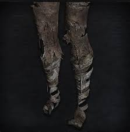 | Harrowed Trousers | Certain Church hunters obfuscate their identities and slip into the nooks and crannies of the city. This is the Trousers that allows these harrowed individuals to go unnoticed. These hunters are keen to early signs of the scourge, serving as a first line of defense against its outbreak. Or perhaps, when the time is ripe, they find signs of the scourge where there are none. It just goes to show, the corner beggar is not always who he seems." |
|
Henryk's Hunter Cap | Hunter's hat worn by Henryk, the old hunter. The taciturn old hunter Henryk was once partners with Father Gascoigne, and though they were a fierce and gallant duo, their partnership led to Henryk's tragically long life. Henryk's unique yellow garb is resistant to bolt and will be of great help to any hunter who has inherited the onus of the hunt." |
|
Henryk's Hunter Garb | Hunter's attire worn by Henryk, the old hunter. The taciturn old hunter Henryk was once partners with Father Gascoigne, and though they were a fierce and gallant duo, their partnership led to Henryk's tragically long life. Henryk's unique yellow garb is resistant to bolt and will be of great help to any hunter who has inherited the onus of the hunt." |
|
Henryk's Hunter Gloves | Hunter's attire worn by Henryk, the old hunter. The taciturn old hunter Henryk was once partners with Father Gascoigne, and though they were a fierce and gallant duo, their partnership led to Henryk's tragically long life. Henryk's unique yellow garb is resistant to bolt and will be of great help to any hunter who has inherited the onus of the hunt." |
|
Henryk's Hunter Trousers | Hunter's trousers worn by Henryk, the old hunter. The taciturn old hunter Henryk was once partners with Father Gascoigne, and though they were a fierce and gallant duo, their partnership led to Henryk's tragically long life. Henryk's unique yellow garb is resistant to bolt and will be of great help to any hunter who has inherited the onus of the hunt." |
| Hunter Garb | "One of the standard articles of hunter attire fashioned at the workshop, this one without the cape that wipes away blood. A fine piece of hunter attire that provides stable defence to anyone facing Yharnam's beastly threat. Allows one to stalk beasts unannounced, by cover of night." | |
|
Hunter Gloves | One of the standard articles of hunter attire, fashioned at the workshop. A fine piece of hunter attire that provides stable defence to anyone facing Yharnam's beastly threat. Allows one to stalk beasts unannounced, by cover of night." |
| Hunter Hat | One of the standard articles of hunter attire fashioned at the workshop. A fine piece of hunter attire that provides stable defence to anyone facing Yharnam's beastly threat. Recognizable by its withered feathers, this cap is fashioned after one of the old hunters. | |
|
Hunter Trousers | One of the standard articles of hunter attire, fashioned at the workshop. A fine piece of hunter attire that provides stable defence to anyone facing Yharnam's beastly threat. Allows one to stalk beasts unannounced, by cover of night." |
|
Iron Yahar'gul Helm | Iron helmet worn by hunters of the Unseen Village. Removing the hood reveals something reminiscent of a warrior of a previous age. This headwear is made of metal, a rarity for hunter garb, and has high defense, but only against physical attacks." |
|
Khaki Haori | Garb of a distant Eastern land, worn by Yamamura the Wanderer. This Eastern warrior pursued a beast for honourable revenge, then became a hunter of the League. But when he stared straight into impurity, it drove him mad." |
|
Knight's Garb | Adornment prized by the knights of Cainhurst. Resembles a ponytail of silver hair. The Cainhurst way is a mix of nostalgia and bombast. They take great pride even in the blood-stained corpses of beasts that they leave behind. confident that they will stand as examples of decadent art." "Attire/Gloves of the knights of Cainhurst. A regal piece graced by intricate goldwork. The Cainhurst way is a mix of nostalgia and bombast. They take great pride even in the blood-stained corpses of beasts that they leave behind. confident that they will stand as examples of decadent art." |
|
Knight's Gloves | Gloves of the knights of Cainhurst. A regal piece graced by intricate goldwork. The Cainhurst way is a mix of nostalgia and bombast. They take great pride even in the blood-stained corpses of beasts that they leave behind. confident that they will stand as examples of decadent art." |
|
Knight's Trousers | Attire of the knights of Cainhurst. A regal piece graced by intricate goldwork. The Cainhurst way is a mix of nostalgia and bombast. They take great pride even in the blood-stained corpses of beasts that they leave behind, confident that they will stand as examples of decadent art." |
|
Knight's Wig | Adornment prized by the knights of Cainhurst. Resembles a ponytail of silver hair. The Cainhurst way is a mix of nostalgia and bombast. They take great pride even in the blood-stained corpses of beasts that they leave behind, confident that they will stand as examples of decadent art." |
| Madman Garb | Most tomb prospectors, members of the Healing Church chosen to explore the old labyrinth, are unable to withstand the weight of the old knowledge, and go mad. This attire is worn by those lost souls. The appendages draped across them are said to be a kind of protective charm, or at least, that is what these lost souls believe with all their hearts." | |
|
Madman Hood | Most tomb prospectors, members of the Healing Church chosen to explore the old labyrinth, are unable to withstand the weight of the old knowledge, and go mad. This attire is worn by those lost souls. Truth oft resembles madness, inaccessible to the dull of mind. Those who go mad are merely thoughtful souls who failed to reach any conclusions." |
| 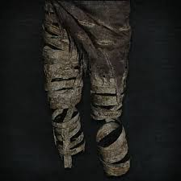 | Madman Leggings | Most tomb prospectors, members of the Healing Church chosen to explore the old labyrinth, are unable to withstand the weight of the old knowledge, and go mad. This attire is worn by those lost souls. Truth oft resembles madness, inaccessible to the dull of mind. Those who go mad are merely thoughtful souls who failed to reach any conclusions." |
|
Madman Manchettes | Most tomb prospectors, members of the Healing Church chosen to explore the old labyrinth, are unable to withstand the weight of the old knowledge, and go mad. This attire is worn by those lost souls. Truth oft resembles madness, inaccessible to the dull of mind. Those who go mad are merely thoughtful souls who failed to reach any conclusions." |
| Maria Hunter Cap | Among the first hunters, all students of Gehrman, was the lady hunter Maria. This was her hunter's cap, crafted in Cainhurst. Maria is distantly related to the undead queen, but had great admiration for Gehrman, unaware of his curious mania" | |
|
Maria Hunter Garb | Among the first hunters, all students of Gehrman, was the lady hunter Maria. This was her hunter's Garb, crafted in Cainhurst. Maria is distantly related to the undead queen, but had great admiration for Gehrman, unaware of his curious mania" |
|
Maria Hunter Gloves | Among the first hunters, all students of Gehrman, was the lady hunter Maria. This was her hunter's Gloves, crafted in Cainhurst. Maria is distantly related to the undead queen, but had great admiration for Gehrman, unaware of his curious mania" |
| 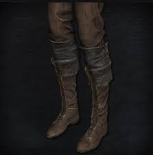 | Maria Hunter Trousers | Among the first hunters, all students of Gehrman, was the lady hunter Maria. This was her hunter's Trousers, crafted in Cainhurst. Maria is distantly related to the undead queen, but had great admiration for Gehrman, unaware of his curious mania" |
|
Master's Iron Helm | An iron helm resembling an upside-down bucket. A single hole allows one to peek out with a single eye, which is probably all that its original owner had. The iron helm is passed down among masters of the League. Valtr had in fact lost the ability to see Vermin long ago." |
| Mensis Cage | The School of Mensis controls the Unseen Village. This hexagonal iron cage suggests their strange ways. The cage is a device that restrains the will of the self, allowing one to see the profane world for what it is. It also serves as an antenna that facilitates contact with the Great Ones of the dream. But to an observer, the iron cage appears to be precisely what delivered them to their harrowing nightmare." | |
| 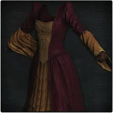 | Noble Dress | A finely tailored bordeaux dress. Worn by the nobles of the old bloodline that traces back to the forsaken Castle Cainhurst. |
|
Old Hunter Arm Bands | Old hunter arm bands wound tightly to prevent infection with the scourge. Of course, the idea that the scourge was infectious was pure hearsay. " |
| Old Hunter Cap | Old Hunter Cap with a wide brim that hides their sharp gaze In the old days, when hunters were ten a penny, this was their standard garb." | |
| 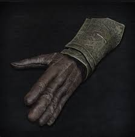 | Old Hunter Gloves | Old Hunter gauntlets made of brass to protect their weapon-bearing hands. At the time, some hunters believed that certain metals would guard off beast blood. On a night of the hunt, it is no wonder that some resort to superstition" |
|
Old Hunter Trousers | Old hunter trousers that protected countless hunters from the beasts in an older age. A widespread belief of the period was that "beast blood crept up the right leg," and this led to the double-wrapped belt. " |
|
Student Trousers | Uniform of the students of Byrgenwerth, a bygone institute of learning. The Healing Church has its roots in Byrgenwerth, and naturally borrows heavily from its uniform design. The focus not on knowledge, or thought, but on pure pretension would surely bring Master Willem to despair, if only he knew." |
|
Student Uniform | Uniform of the students of Byrgenwerth, a bygone institute of learning. Features a thick cape. The Healing Church has its roots in Byrgenwerth, and naturally borrows heavily from its uniform design. The focus not on knowledge, or thought, but on pure pretension would surely bring Master Willem to despair, if only he knew." |
|
Sullied Bandage | Bandage worn upon awakening to the nightmare of blood and beasts. Terribly worn and unsanitary. A faint memory recalls blood ministration, involving the transfusion of unknown blood. Not long after. the nightmare began." |
|
Surgical Long Gloves | White surgical gloves. The intricate embroidery weaves a spell that protects their wearer. The Church engages in the hunt in a medical capacity. When a cancer is discovered, one must pinpoint its location, reach in, and wrench it from the host's bosom." |
|
Sweaty Clothes | Common Yharnam clothing. Well-worn and damp with sweat." |
| Tomb Prospector Garb | Attire of tomb prospectors who explore the old labyrinth on behalf of the Healing Church. The Healing Church traces its roots to Byrgenwerth, and is therefore aware of the ruins' true importance. They contain much more than mere hunter trinkets, indeed, they hide the very secrets of the old Great Ones. sought after by those with the insight to imagine greatness." | |
|
Tomb Prospector Gloves | Attire of tomb prospectors who explore the old labyrinth on behalf of the Healing Church. The Healing Church traces its roots to Byrgenwerth, and is therefore aware of the ruins' true importance. They contain much more than mere hunter trinkets, indeed, they hide the very secrets of the old Great Ones. sought after by those with the insight to imagine greatness." |
|
Tomb Prospector Hood | Attire of tomb prospectors who explore the old labyrinth on behalf of the Healing Church. The Healing Church traces its roots to Byrgenwerth, and is therefore aware of the ruins' true importance. They contain much more than mere hunter trinkets, indeed, they hide the very secrets of the old Great Ones. sought after by those with the insight to imagine greatness." |
| 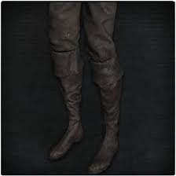 | Tomb Prospector Trousers | Attire of tomb prospectors who explore the old labyrinth on behalf of the Healing Church. The Healing Church traces its roots to Byrgenwerth, and is therefore aware of the ruins' true importance. They contain much more than mere hunter trinkets, indeed, they hide the very secrets of the old Great Ones, sought after by those with the insight to imagine greatness." |
|
Top Hat | Hat worn by Hunters who admire formality: Some hunters place an emphasis on form, as seen by the use of the threaded cane. For them, formality, beauty, and justice are the very essence of our humanity, and precisely what keeps hunters from becoming something else." |
|
White Church Garb | Attire of special Church doctors. These doctors are superiors to the black preventative hunters, and specialists in experimentally-backed blood ministration and the scourge of the beast. They believe medicine is not a means of treatment but rather a method for research. and some knowledge can only be obtained by exposing oneself to sickness." |
| White Church Hat | Attire of special Church doctors. These doctors are superiors to the black preventative hunters, and specialists in experimentally-backed blood ministration and the scourge of the beast. They believe that medicine is not a means of treatment but rather a method for research. and that some knowledge can only be obtained by exposing oneself to sickness." | |
| White Church Trousers | Attire of special Church doctors. These doctors are superiors to the black preventative hunters, and specialists in experimentally-backed blood ministration and the scourge of the beast. They believe the Trousers medicine is not a means of treatment but rather a method for research. and the Trousers some knowledge can only be obtained by exposing oneself to sickness." | |
|
Wine Hakama | Garb of a distant Eastern land, worn by Yamamura the Wanderer." "This Eastern warrior pursued a beast for honorable revenge, then became a hunter of the League. But when he stared straight into impurity, it drove him mad." |
|
Yahar'gul Black Garb | Thick black pullover worn by hunters of the Unseen Village. The hunters of Yahar'gul answer to the village's founders, the School of Mensis. Hunters in name only, these kidnappers blend into the night wearing this attire. Designed primarily to defend from physical attacks, the binding of thick rope serves both to protect its wearer, and restrain his foes." |
|
Yahar'gul Black Gloves | Thick black gloves worn by hunters of the Unseen Village. The hunters of Yahar'gul answer to the village's founders, the School of Mensis. Hunters in name only, these kidnappers blend into the night wearing this attire. Designed primarily to defend from physical attacks, the binding of thick rope serves both to protect its wearer, and restrain his foes." |
|
Yahar'gul Black Trousers | Thick black trousers worn by hunters of the Unseen Village. The hunters of Yahar'gul answer to the village's founders, the School of Mensis. Hunters in name only, these kidnappers blend into the night wearing this attire. Designed primarily to defend from physical attacks, the binding of thick rope serves both to protect its wearer, and restrain his foes." |
|
Yamamura Hunter Hat | A standard hunter's hat, worn by Yamamura the Wanderer. This hat and staff were given to him when he became a hunter and confederate of the League. |
| Yharnam Hunter Cap | Ludwig, the first hunter of the Healing Church, once recruited Yharnamites to serve as hunters. This hunter's attire was made for new recruits, and has excellent straightforward defense. But not nearly enough to allow an ordinary man to stand any real chance against the beasts" | |
| Yharnam Hunter Garb | Ludwig, the first hunter of the Healing Church, once recruited Yharnamites to serve as hunters. This hunter's attire was made for new recruits, and has excellent straightforward defense. But not nearly enough to allow an ordinary man to stand any real chance against the beasts." | |
|
Yharnam Hunter Trousers | Ludwig, the first hunter of the Healing Church, once recruited Yharnamites to serve as hunters. This hunter's attire was made for new recruits, and has excellent straightforward defense. But not nearly enough to allow an ordinary man to stand any real chance against the beasts." |